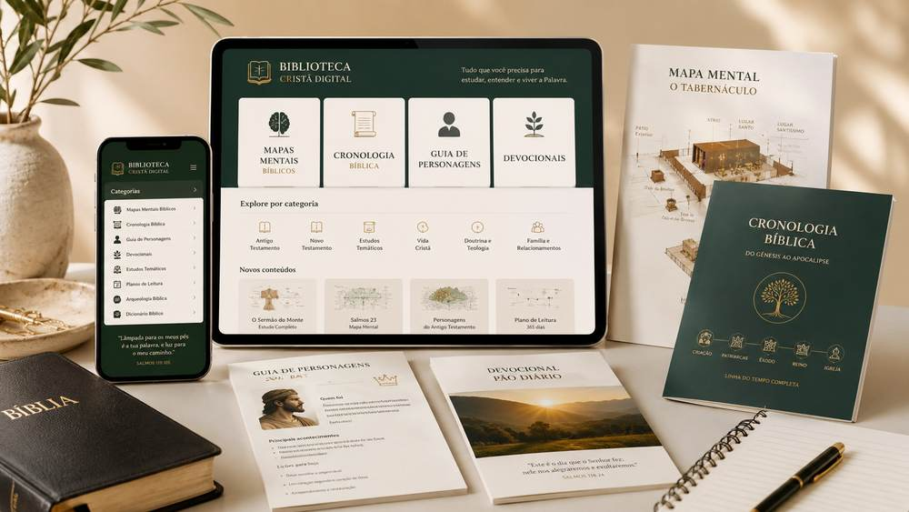
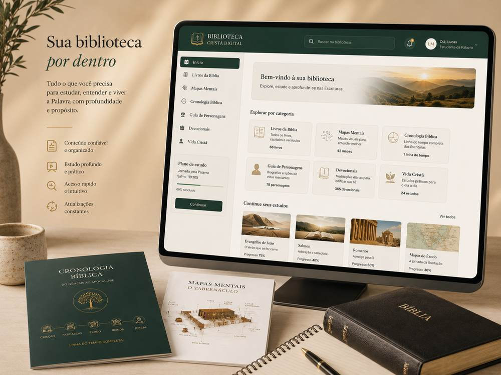

Pare de ler a Bíblia sem entender o contexto.
Tenha mapas mentais, cronologias, guias, estudos e devocionais organizados para entender melhor personagens, acontecimentos e conexões da Bíblia.

Seu estudo não precisa ser uma sequência de pesquisas soltas.
O problema não é falta de interesse. Muitas vezes falta uma estrutura simples para encontrar contexto e conectar as informações.
Sem uma biblioteca organizada
- Abrir vários sites e vídeos
- Perder materiais que já encontrou
- Ler sem saber o contexto histórico
- Não lembrar onde cada fato se encaixa
- Ficar sem saber por onde continuar
Com a Biblioteca Cristã Digital
- Escolher o assunto que quer estudar
- Consultar recursos separados por categoria
- Visualizar relações entre fatos e personagens
- Revisar com mapas e cronologias
- Continuar seu estudo com uma rota mais clara

Uma experiência organizada para estudar sem se perder.
Em vez de entregar uma pasta confusa, a proposta é reunir diferentes tipos de recurso em uma estrutura visual fácil de consultar.
encontre com mais rapidez aquilo que procura.
use mapas e cronologias para revisar e relacionar informações.
consulte um ponto específico ou aprofunde um tema.
Diferentes recursos para diferentes momentos do estudo
A força da biblioteca está em combinar formatos que ajudam tanto na consulta rápida quanto no aprofundamento.
Mapas Mentais Bíblicos
Para visualizar relações, revisar conteúdos e lembrar dos pontos principais.
Cronologia Bíblica
Para entender quando os acontecimentos ocorreram e como se conectam.
Guias e Estudos
Para aprofundar personagens, temas e assuntos importantes da caminhada cristã.
Três passos simples
Faça sua compra
Escolha o plano que melhor combina com o seu momento.
Receba o acesso
O acesso digital é liberado conforme o fluxo da plataforma de pagamento utilizada.
Comece a consultar
Abra pelo celular, tablet ou computador e use os materiais no seu ritmo.
Você não precisa ser especialista para aproveitar.
O foco principal é o estudo pessoal de qualquer cristão.
A proposta é facilitar a consulta e a compreensão.
A linguagem busca ser ampla e acessível ao público cristão.
Use para uma consulta rápida ou para uma sessão mais longa.
Ideal para quem quer ter os materiais sempre por perto.
Os recursos visuais ajudam a revisar e relacionar conteúdos.
Conheça a biblioteca com tranquilidade.
Você poderá acessar o material e avaliar se ele faz sentido para sua rotina. O reembolso seguirá as condições da plataforma de pagamento utilizada.
Comece sua Biblioteca Cristã Digital
Duas opções para entrar. O plano Completo concentra a experiência mais ampla.
Essencial
Para quem quer começar de forma objetiva.
- Acesso digital
- Conteúdos principais
- Mapas mentais essenciais
- Cronologia bíblica
Biblioteca Completa
Para quem quer aproveitar a experiência mais ampla.
- Tudo do Essencial
- Coleção ampliada de mapas mentais
- Guia de personagens
- Estudos temáticos
- Devocionais
- Planos de leitura
- Materiais complementares da oferta
Os links reais de checkout ainda precisam ser inseridos antes de enviar tráfego pago para a página.
Antes de começar
Preciso ser pastor ou líder?
Não. A proposta é atender qualquer cristão que queira estudar a Bíblia com mais organização.
Preciso ter conhecimento teológico?
Não. A estrutura é pensada para ser acessível também a quem está começando.
Posso acessar pelo celular?
Sim. A experiência foi pensada para consulta digital em diferentes dispositivos.
É um curso de teologia?
Não. É uma biblioteca digital de estudo e consulta e não oferece titulação acadêmica.
É ligada a uma denominação?
A proposta é trabalhar com linguagem cristã ampla e acessível.
Como funciona a garantia?
São 7 dias para avaliar o material, seguindo as condições da plataforma de pagamento.
Tenha uma referência para consultar quando surgir uma dúvida bíblica.
Organize melhor seus estudos, visualize contextos e tenha recursos sempre à mão para continuar aprendendo.
QUERO MINHA BIBLIOTECA CRISTÃ